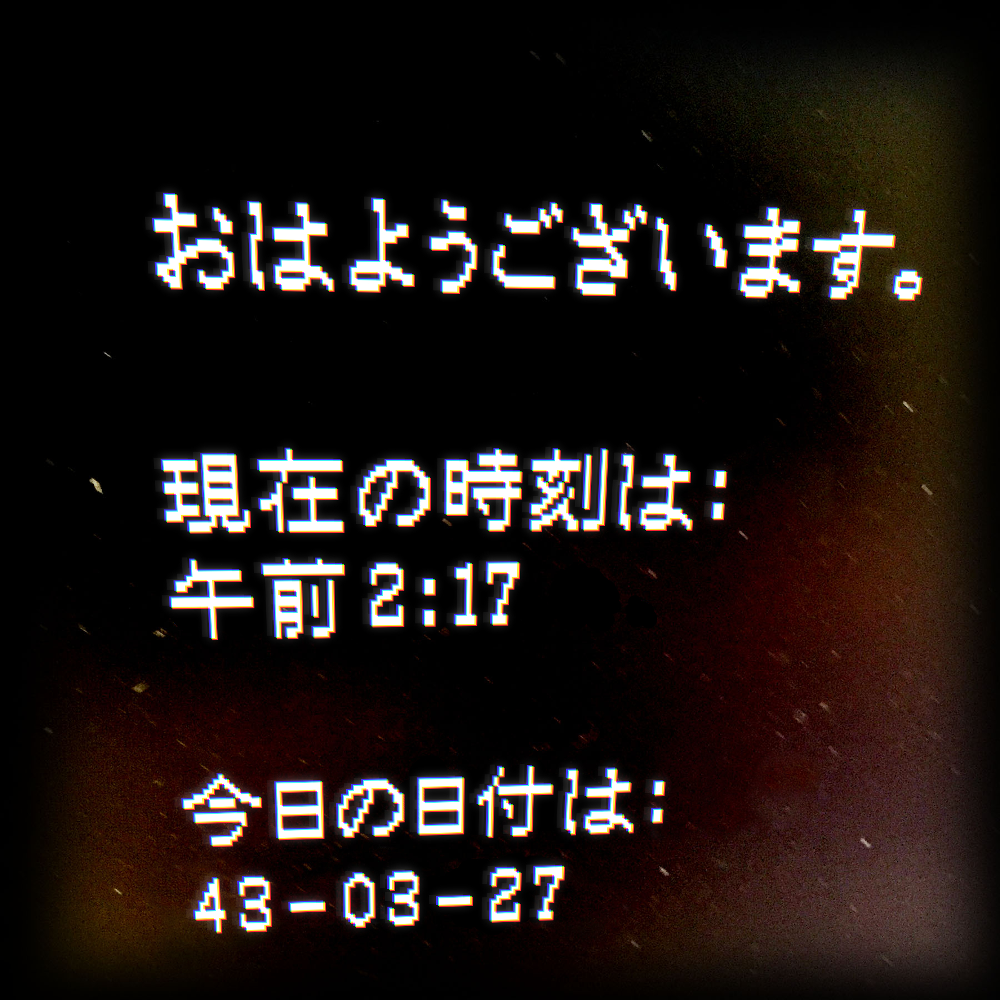

フットボールの未来の姿
/cdn.vox-cdn.com/uploads/chorus_image/image/55486613/GettyImages-634583072.0.jpg)
アメリカン・フットボールの競技に変革が必要なのは明らかだ。そこでいわゆる“6万4千ドルの質問”──つまり最大の難問が浮上する。それは、「どう」変わるべきなのか。何かがおかしい。親が怪我や健康を心配するという理由でフットボールに参加しない若者が増えているのも事実だ。
近年、NFLでは何かがおかしい。数々の臨床研究を受けて、リーグは対応を──何かがおかしい。あぁ。何かがおかしい。
あれが聞こえるか？恐れる必要はないが、何かがおかしい。ページが崩壊してしまうかもしれない。混乱しているかもしれないけど、何も壊れはしないから安心してほしい。カレンダーが見えてきた。よく分からない。何かがおかしい。何かがおかしい。何かがおかしい。何かがおかしい。何かがおかしい。何かがおかしい。何かがおかしい。何かがおかしい。何かがおかしい。何かがおかしい。何かがおかしい。何かがおかしい。何かがおかしい。何かがおかしい。何かがおかしい。何かがおかしい。何かがおかしい。何かがおかしい。何かがおかしい。何かがおかしい。何かがおかしい。何かがおかしい。何かがおかしい。何かがおかしい。何かがおかしい。何かがおかしい。何かがおかしい。何かがおかしい。何かがおかしい。何かがおかしい。何かがおかしい。何かがおかしい。何かがおかしい。何かがおかしい。何かがおかしい。何かがおかしい。何かがおかしい。何かがおかしい。何かがおかしい。何かがおかしい。何かがおかしい。何かがおかしい。何かがおかしい。何かがおかしい。



第一章「お願い、応答して」
第二章「ネブラスカ州スワード郊外」
第三章「何がどうなってるの？」（動画）
第四章「テネシー州ナッシュビル市——ウエストバージニア州」
第五章「ナノって一体何なの？」（動画）
第六章「アリゾナ州ペイジ市」
第七章「永久に遊んでるだけ」（動画）
第八章「ネブラスカ州ビー村」
第九章「やっぱいいや、なんでもない」（動画）
第十章「コロラド州デンバー市」
第十一章「幕間 その一」
第十二章「幕間 その二」
第十三章「幕間 その三」
第十四章「幕間 その四」
第十五章「もう分からない」（動画）
第十六章「アラスカ州デナリ——イリノイ州シカゴ市」
第十七章「待て待て待て嘘だこんなこと」（動画）
第十八章「カリフォルニア州リバモア市」
第十九章「弔辞」（動画）
第二十章「ケンタッキー州ルイビル市」
第二十一章「またこれかよ」（動画）
第二十二章「ネブラスカ州ホーマー市」
第二十三章「見に行かないと」（動画）
第二十四章「ニューヨークシティ」
第二十五章「夜」